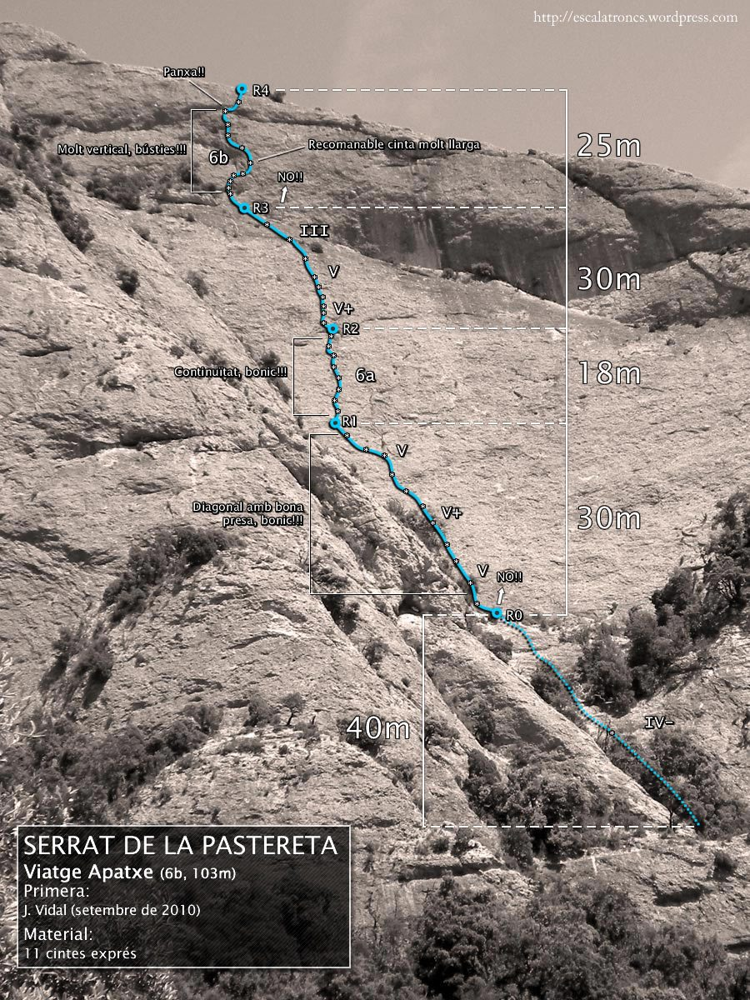

Viatge Apatxe
6bWest face · 100 m · 4 pitches
A fun, well-protected sport line on the west face, climbing the panel to the left of El Kraken. Four pitches plus a short approach scramble, on varied, pocketed rock up to 6b (obligatory 6a). Fully bolted — 11 quickdraws. West-facing, so it’s a good target for warmer mornings.
English translation by DeepSeek V4.1, prepared on behalf of D. S. K. Liu. Original topo © Escalatroncs, CC BY-NC 3.0.